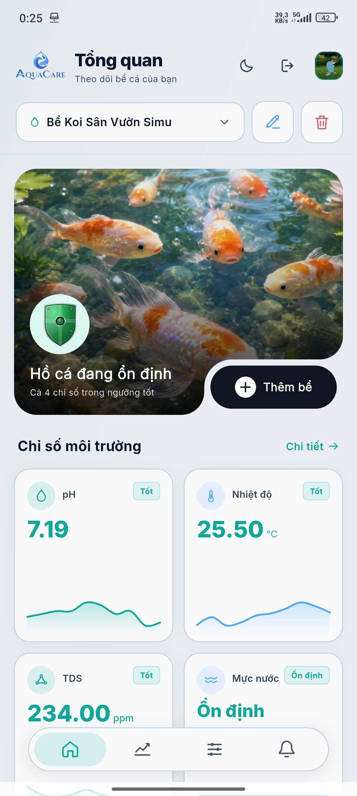

XIN CHÀO, MINH PHẠM
Hồ cá của bạn hôm nay
Thông số môi trường đang ổn định.
pH7.19 · An toàn
Nhiệt độ25.5°C · Phù hợp
TDS234 ppm · Ổn định
Nút web được làm nổi bật hơn. Mobile dùng chính màn hình Tổng quan hiện tại và đặt lối vào ở cuối nội dung cuộn.
Thông số môi trường đang ổn định.
Nền trắng, viền xanh nhạt, biểu tượng nổi bật và hai dòng chữ. Nút không tự mở hay nhấp nháy.

Không thêm tab điều hướng, không che dashboard, không gửi lời nhắc trong lúc người dùng thao tác.